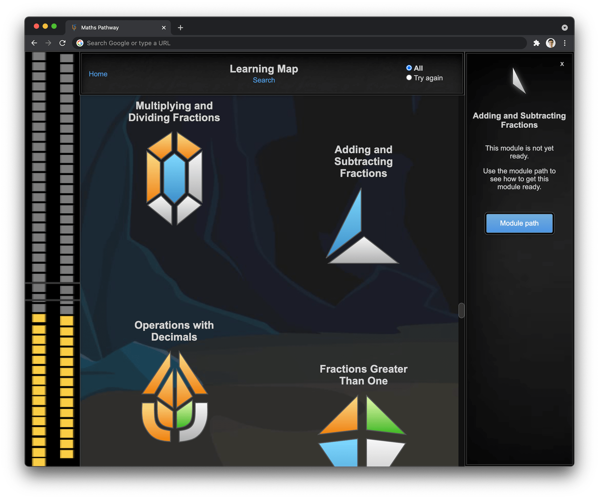
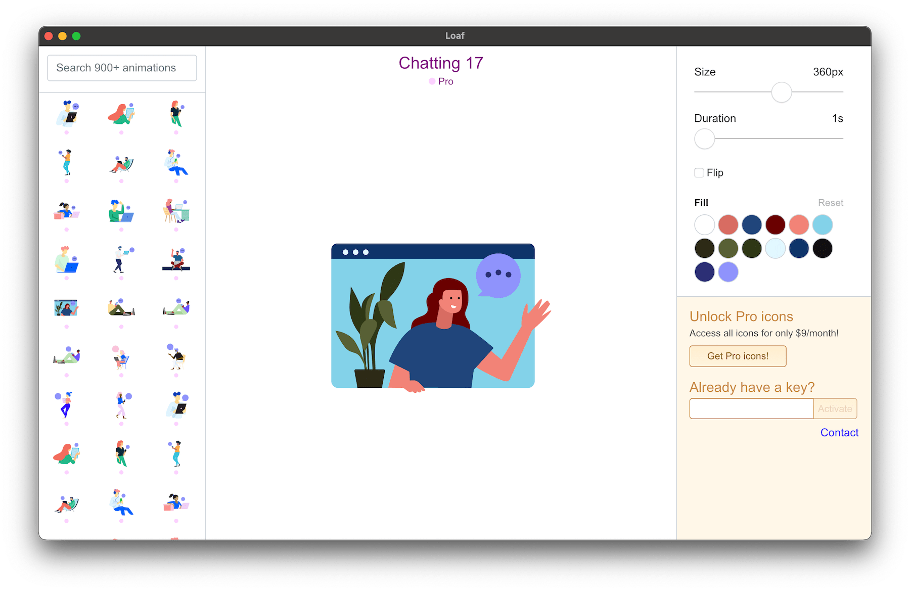

Maths Pathway
Role summary
I led the redesign of the student web application used by 70,000 primary and high school students. I redesigned the teacher web application and created the framework for the development of future product vision. I helped foster a positive attitude towards product design within the engineering team. I facilitated user feedback workshops and brainstorming sessions. Other activities included specification writing, designing user interfaces, design thinking, bench testing and contributing directly to the codebase by writing production HTML and CSS.
Tools used
- Figma, Sketch
- HTML/CSS/SVG/git
- Photoshop, Illustrator
Key achievements
- Redesigned the student app
- Redesigned the teacher app
Context
When I went to high school everyone learned maths the same way. The teacher would start the lesson with: “Everyone turn to chapter 7”. The idea, of all students learning the same content at the same time, is what Maths Pathway is flipping on its head. With Maths Pathway, all students learn the maths that they are ready for. This is enabled by intuitive technology and amazing teachers.
All students sit an initial diagnostic to determine what their maths knowledge is. For a year 7 class, some students might be at level 4. Other students might be at level 8. That’s OK. We can’t look back. What we can do is provide students with maths that’ll make the most impact on their learning.
Over 300 schools in Australia use this approach to teaching maths. Not only do students work on maths that’s perfectly tailored to their needs, teachers get powerful data tools that improve their teaching practices. Instead of teaching 25 kids the same content, teachers can use accurate data to target their teaching more effectively. Things like mini-lessons are now possible; working with 4-5 students at a time on a given topic.
Soon after joining Maths Pathway I was tasked with redesigning the student experience. Working closely with internal stakeholders and conducting user research workshops, an initial prototype was designed and then developed over the course of several months.

After this project was released another project was already underway: redesigning the teacher experience.
It was becoming clear that in order for schools to succeed and for students to maximise their potential, all areas of the Maths Pathway model needed to be implemented. This includes Diagnostics, Tests, Feedback, Mini-lessons, Rich Learning and more. As such, we needed to ensure teachers had a firm understanding of all these different components and how they fit into the classroom environment. A new dashboard was designed (along with an overhaul to the global navigation) to help with this.
This redesigned dashboard provided the right balance of onboarding new users, providing context for existing users as well as supporting power users.
Maths Pathway is a technology startup based in Melbourne, Australia. Learn more here.
New Zealand Stock Exchange
Role summary
I led the redesign of the Profarmer web application, a daily grain pricing service used by thousands of grain farmers and analysts in the Australian grain industry. This work informed my redesign of the Profarmer marketing website and the Profarmer iPhone and iPad applications. I designed the standalone SalesMate iPhone application, a service which helps farmers make decisions on how much of their wheat crop to sell at a given time. I designed the physical booths used by the business for the Australian Grains Industry Conference (AGIC).
Tools used
- Photoshop, InDesign
- Sketch
Key achievements
- Redesigned the Profarmer web application
- Refreshed the Profarmer iPhone application
- Refreshed the Profarmer iPad application
- Designed the SalesMate iPhone application
- Redesigned the Profarmer marketing website
Context
The New Zealand Stock Exchange (NZX) had an office in St Kilda, Melbourne which worked on building tools for stakeholders in the Australian grain industry. A grain trading platform (Clear) and price discovery tools (Profarmer) were part of this suite of tools.
My first project was redesigning the Profarmer price tool. This application was used by thousands of grain farmers and analysts to track the price of Wheat, Barley, Canola and many other grain and cereal products. The redesigned simplified the experience, with a focus on improving price transparency.
The main way to find grain prices is to search for grain storage locations. An onboarding experience was designed and developed which helped users understand how the search feature works. The redesign of the Profarmer web app lead to the redesign of the marketing website and the Profarmer iPhone and iPad applications. I led all of these design efforts.
Another project I was involved in was designing the SalesMate iPhone application. This app provides a service which helps farmers make decisions on how much of their wheat crop to sell at a given time. Based on their risk profile and expected yield, a recommendation is made which farmers can use to help guide their decisions.
Learn more about Profarmer here.
TCGFish
Summary
As someone who collected Pokémon cards as a kid, I did some price research and stumbled across TCGFish. After using it I thought it could be improved so I fired up Figma and had some fun improving it. I saw that there was a Discord so I joined and reached out to the owner showing some screenshots of the ideas I had for UI improvements. He really liked them and it evolved naturally from there!
Collaborating on a product where you already have existing domain knowledge makes such a big difference. Design decisions become so much easier. That was something that became very apparent the more UI designs I created for TCGFish. Assumptions that would ordinarily have to be tested and reviewed became decisions I could make automatically.
Tools used
- Figma
Key achievements
- Designed the market cap page
- Redesigned the card price page
- Designed the Portfolio page
- Redesigned the homepage
- Designed the Watchlist for mobile
Learn more about TCGFish here.
Saasu
Role summary
I designed new product features, redesigned the marketing website and redesigned the knowledge base. I worked on the internal “Saasu 2023” UI concept. This UI concept helped drive future product development. I created graphics and animations for the website and blog.
Tools used
- Photoshop
- HTML, CSS
Key achievements
- Designed major new product features
- Redesigned the marketing website
- Redesigned the help centre
- Designed the internal “Saasu 2023” UI concept
Context
Saasu is online accounting software. This was my first design role and I’m still incredibly grateful for the opportunity I was given to learn on the job. I had a couple fantastic mentors while in this role which helped shape and inform my design process and aesthetic.
My first design project was working on the marketing website. I was involved in the development of the website as well. After I cut my teeth on this I moved onto designing various features for the main web application. I also redesigned and rebuilt the help centre using Wordpress.
By far, the most exciting and fulfilling project was working on the internal “Saasu 2023” UI concept. This UI concept (which was undertaken in 2013) made bold predictions about what accounting software might look like 10 years in the future. This UI concept helped drive future product development such as building a global search tool and a cashflow forecasting tool. This general idea of thinking about where an industry and product might be in the long term and backwards planning from there left a strong impression on me and is something that I’ve brought to other roles.
Loaf
Summary
Loaf (getloaf.io) is my side project. It is an Electron.js app that helps web designers and developers integrate animated SVG icons into their workflow. After partnering with an engineer to build the initial prototype, I now maintain this application.